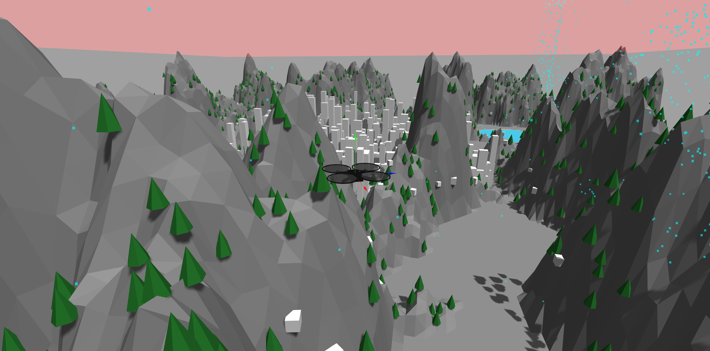
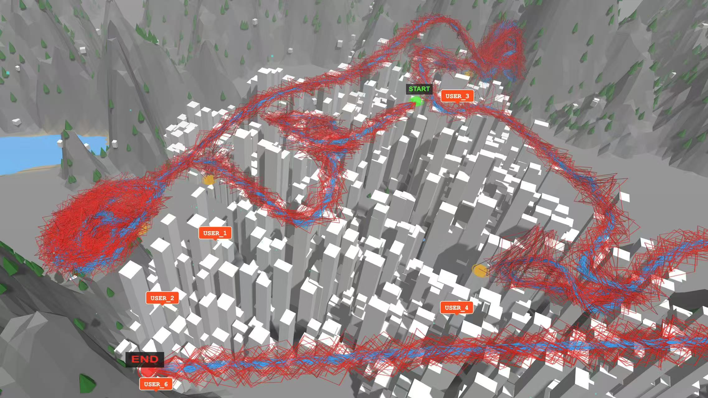
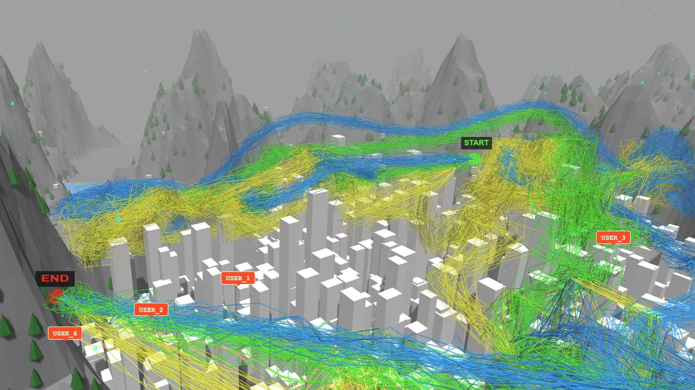
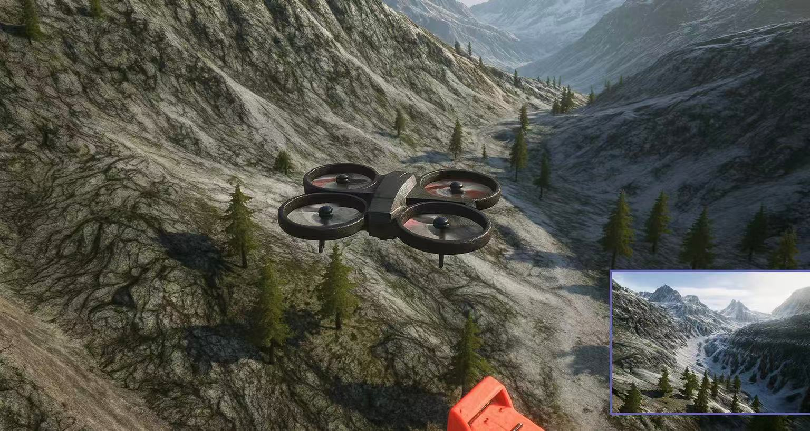

Attitude Control
FEAR-PID improves stability for takeoff, cruising, and landing under dynamic conditions.
Computer Networks - UAV-Assisted Fog Computing
A unified framework that couples attitude control, trajectory planning, resource allocation, and task assignment to reduce latency and energy consumption in terrain-aware 3D UAV fog networks.

System simulation environment snapshot.We study a UAV-enabled fog computing system where a single UAV acts as both a mobile relay and a fog node. The framework jointly optimizes attitude control, trajectory planning, resource allocation, and task assignment, ensuring decisions in one module improve outcomes in the others.
FEAR-PID improves stability for takeoff, cruising, and landing under dynamic conditions.
ACS-DS adds decoupling and safety values to accelerate convergence and avoid local optima.
PSO-based allocation balances computation between IoT devices, UAV, and cloud.
Cross-layer decisions reduce latency and energy consumption across the full mission.
The system integrates control, networking, and computation modules in a tightly coupled loop. The UAV attitude influences communication quality, which feeds trajectory updates and task offloading decisions.
Extensive simulations show major efficiency gains over mainstream baselines.
Representative simulation outcomes from the UAV-assisted fog computing testbed.



All figures below are directly loaded from the paper folder for easy GitHub Pages deployment.